기상기사 (2004-08-08 기출문제)
1과목: 기상관측법
1. 수은기압계를 사용하여 기압관측을 할때 보정(補正) 순서가 맞게 되어있는 것은?
- 기차보정, 온도보정, 중력보정, 해면경정
- 온도보정, 기차보정, 중력보정, 해면경정
- 해면경정, 중력보정, 기차보정, 온도보정
- 온도보정, 중력보정, 해면경정, 기차보정
(정답률: 알수없음)

2. 야간 수평시정 관측용으로 일정거리에 시정목표로써 광원이 있다. 야간시정에 영향을 주지 않는 것은?
- 광원의 밝기
- 관측자의 육안의 감각도
- 대기의 투명도
- 대기의 습도
(정답률: 알수없음)
3. 풍속이 정온(Calm)이라 함은 어느 때를 말하는가?
- 0.0㎧ 일 때
- 0.0㎧ 이상, 0.1㎧ 미만일 때
- 0.0㎧ 이상, 0.2㎧ 이하일 때
- 0.5㎧ 이하일 때
(정답률: 알수없음)
4. 기온이 10℃, 혼합비가 7.76g/㎏, 절대습도가 9.41g/m3인 상태의 습윤 공기의 비습은?
- 1.55g/㎏
- 7.70g/㎏
- 15.50g/㎏
- 70.70g/㎏
(정답률: 알수없음)
5. 다음 습도를 관측할 때 이용하는 일반적인 원리들 중 적당하지 않은 것은?
- 열역학 원리
- 흡습성 물질의 팽창수축 원리
- 습도에 따른 전기저항 변화 원리
- 습도에 따른 모세관 현상 원리
(정답률: 알수없음)
6. 1cm2에 1㎏의 질량이 해면고도에 있을 때 그 압력을 hPa로 나타내면? (단, 중력가속도는 980㎝/sec2임)
- 980hPa
- 1000hPa
- 1013hPa
- 1048hPa
(정답률: 알수없음)
7. 알베도 메터(albedo meter)는 무엇을 측정하는 기기인가?
- 표면의 장력(surface tension)
- 표면의 흡수력(absorbing power)
- 표면의 거칠기(roughness)
- 표면의 반사력(reflecting power)
(정답률: 알수없음)
8. 경사계(clinometer)를 이용하여 관측할 수 있는 요소는?
- 운형
- 운고
- 운량
- 운향
(정답률: 알수없음)
9. 지구상에서 대기운동의 주된 에너지원이 되는 것은?
- 태양
- 응용상태의 핵
- 지열
- 우주선
(정답률: 알수없음)
10. 다음 중 백엽상의 제작조건에 합당하지 않는 것은?
- 상내 온도분포가 일정하여야 한다.
- 상내외 통풍에는 관계가 없다.
- 상내외 온도가 동일하여야 한다.
- 복사(방사)열을 방지할 수 있어야 한다.
(정답률: 알수없음)
11. 햇무리, 달무리 현상은 다음 중 어느 구름에서 잘 생기는가?
- Cc
- Cs
- Ac
- As
(정답률: 알수없음)
12. 대형 증발계에서 시침으로 읽은 값은 수온과 수위측정기의 온도가 몇 ℃일 때의 시도로 보정하여야 하는가?
- 그날의 최저기온의 온도
- 그날의 최고기온의 온도
- 0℃
- 4℃
(정답률: 알수없음)
13. 국가표준기압계(national standard barometer)를 지역표준기압계(regional standard barometer)와 비교 검정하여야 하는 기간은?
- 1년 마다
- 5년 마다
- 10년 마다
- 20년 마다
(정답률: 알수없음)
14. 다음 중 대기전상(大氣電像, Electro meteors)이 아닌 것은?
- 뇌전(Thunderstorm)
- 번개(Lightning)
- 극광(Polar aurora)
- 비숍환(Bishop's ring)
(정답률: 알수없음)
15. 기상관측에서의 풍향은 다음 중 어느 것을 뜻하는가?
- 관측시각 전 10분간의 최대풍속 때의 풍향
- 관측시각 전 10분간의 평균풍향
- 관측시각 5분 전후의 최대풍속 때의 풍향
- 관측시각 5분 전후의 평균풍향
(정답률: 알수없음)
16. 수은 온도계의 장점이 아닌 것은?
- 사용에 편리하다.
- 제조가 용이하다.
- 유지보수가 거의 필요없다.
- 추운지방에서 사용하기 편리하다.
(정답률: 알수없음)
17. 전천(全天)이 완전히 짙은 안개로 차폐되어 하늘 상태를 판별할 수 없을 때, 이 때의 운량은?
- 1
- 10
- 0
- x(불명)
(정답률: 알수없음)
18. 기후 관측소를 설치하는데 고려할 사항이다.가장 적절한 것은? (단,특수목적의 기후관측소는 제외)
- 최소 5년간 계속 운영할 수 있는 곳
- 최소 10년간 계속 운영할 수 있는 곳
- 주위의 환경이 변하여도 관계 없다.
- 최소 5년에 한번씩 측기 및 관측법의 검사를 할 수 있는 곳
(정답률: 알수없음)
19. 적운(Cu)과 적난운(Cb)의 높이에 관한 설명 중 가장 옳은 것은?
- 전형적인 하층운이다.
- 수직발달이 심하기 때문에 편의상 중층에 속한다고 본다.
- 구름의 밑은 일반적으로 하층에 속하나 정상은 중층 또는 상층까지 발달한다.
- 적운은 전형적인 하층운이지만 적난운은 특수고도를 갖는다.
(정답률: 알수없음)
20. 구름의 고도구분에서 중층운의 한계는 다음 중 어느 것인가?
- 평균 4~7㎞이다.
- 극지방에서 2~4㎞,열대지방에서 2~8㎞이다.
- 지역과 계절에 따라 바뀌지만 대체로 2~4㎞이다.
- 극지방으로 갈수록 한계의 범위는 커져서 2~8㎞까지 이른다.
(정답률: 알수없음)
2과목: 대기열역학
21. 다음 그림은 등온곡선이다. 보일.샤를의 법칙에 가장 잘 맞는 곡선은 몇도 곡선인가?
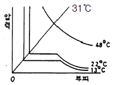
- 48℃의 곡선
- 31℃의 곡선
- 22℃의 곡선
- 13℃의 곡선
(정답률: 알수없음)
22. 다음 그림은 기체의 압력(P)과 부피(V)와의 관계도표이다. 이 그림표의 빗금의 넓이는 무엇을 뜻하는가?
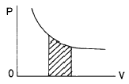
- 힘
- 온도
- 일
- 열
(정답률: 알수없음)
23. 어떤 기체의 정압비열이 7R/2일 때 그 기체의 정적비열은?
- R/2
- R
- 3R/2
- 5R/2
(정답률: 알수없음)
24. 습윤공기의 온도를 T, 혼합비를 χ 라 할 때, 가온도(virtual temperature) Tv를 구하는 공식은?
- Tv = (1 - 0.61χ )T
- Tv = (1 - 1.609χ )T
- Tv = (1 + 0.61χ )T
- Tv = (1 + 1.609χ )T
(정답률: 알수없음)
25. 다음 중 이상기체의 내부에너지가 가장 큰 상태는?
- 1기압, 200 K
- 2기압, 100 K
- 0.5기압, 300 K
- 0.1기압, 50 K
(정답률: 알수없음)
26. 다음중 열역학 제 1법칙을 맞게 기술한 것은?
- 에너지 보존 법칙이다.
- 운동량 보존 법칙이다.
- 질량 보존 법칙이다.
- 열전도도에 관한 법칙이다.
(정답률: 알수없음)
27. 다음 포화혼합비선 값에 대한 설명 중 올바른 것은?
- 압력이 감소할수록 작아진다.
- 온도가 감소할수록 커진다.
- 포화증기압이 증가할수록 커진다.
- 압력과 온도에 무관하다.
(정답률: 알수없음)
28. 다음 중 습윤공기의 상태방정식으로 옳은 것은?
- 기압 = 건조공기 기체상수 × 건조공기밀도 × 기온
- 기압 = 건조공기 기체상수 × 습윤공기밀도 × 가온도
- 기압 = 습윤공기 기체상수 × 습윤공기밀도 × 기온
- 기압 = 습윤공기 기체상수 × 습윤공기밀도 × 가온도
(정답률: 알수없음)
29. 다음 중 등적비열(Cv)과 등압비열(Cp)에 관한 관계식 중 옳은 것은? (단, R은 기체상수이다.)
- Cv = Cp + 2R
- Cp = Cv + 2R
- Cv= Cp + R
- Cp = Cv + R
(정답률: 알수없음)
30. 건조 공기가 단열적으로 상승하면 고도 100 m 증가에 대해 몇 도 정도 기온이 감소하는가?
- 0℃
- 0.1℃
- 1.0℃
- 0.65℃
(정답률: 알수없음)
31. 상당온위와 기온과의 관계로 옳은 것은?
- 상당 온위가 기온보다 높다.
- 기온이 상당 온위보다 높다.
- 같다.
- 관계가 없다.
(정답률: 알수없음)
32. 다음 설명 중 옳지 않는 것은?
- 등온위 과정은 등엔트로피 과정이다.
- 비가역과정은 가역과정보다 더 효율적이다.
- 단열과정은 등엔트로피 과정이다.
- 카르노 효율은 엔진에 흡수된 열량에 대한 엔진이 행한 기계적 일의 양의 비이다.
(정답률: 알수없음)
33. 건조 공기가 수증기를 포함하게 되는 경우 공기의 평균 분자량은 어떻게 변하는가?
- 작아진다.
- 커진다.
- 변화 없다.
- 경우에 따라 다르다.
(정답률: 알수없음)
34. 어떤 고도에서의 기압은 그 고도위에 놓여 있기 전 대기의 무게와 같다는 것을 나타내는 식은?
- 상태방정식
- 정역학방정식
- 연속방정식
- 열역학에너지방정식
(정답률: 알수없음)
35. 응결과정에서 생성된 모든 것(물방울 또는 빙정)이 공기속에 그대로 남아있는 경우는 어떤 과정인가?
- 아상과정
- 건조단열과정
- 포화단열과정
- 위단열과정
(정답률: 알수없음)
36. 일반대기에서 기온(T), 노점온도(Td), 습구온도(Tw)의 관계를 맞게 표시한 것은?
- Td ≥ Tw ≥ T
- Td ≥ T ≥ Tw
- T ≥ Td ≥ Tw
- T ≥ Tw ≥ Td
(정답률: 알수없음)
37. 공기 중에 포함된 수증기량을 나타내는 방법 중의 하나인 것은?
- 혼합비
- 조성비
- 성분비
- 건습비
(정답률: 알수없음)
38. 대기가 정적으로 매우 안정할 때 나타나는 현상은?
- 신기루
- 새벽안개
- 적운
- 뇌우
(정답률: 알수없음)
39. 건조단열감율 γd, 포화단열감율을 γs, 실제기온감율을 γ 라고 할 때 대기가 조건부 불안정인 경우는?
- γd > γs > γ
- γs > γd > γ
- γ > γd > γs
- γd > γ > γs
(정답률: 알수없음)
40. 기준기압을 1000 hPa로 취했을 때 Poisson 방정식은 다음과 같다.
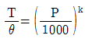
위 방정식에서 읨는 다음 중 어느 것인가? (단,T는 절대온도(K),P는 기압(hPa), Κ (카파)= 0.286)- 습구온위
- 온위
- 상당온위
- 노점온도
(정답률: 알수없음)
3과목: 대기운동학
41. 지균풍의 발생요건 중 타당한 것은?
- 가속도가 크다.
- 마찰이 작용한다.
- 기압경도력이 존재해야 한다.
- 전향력, 기압경도력, 원심력이 평형을 이룬다.
(정답률: 알수없음)
42. 다음 중 플럭스가 일정한 층은?
- 지표층(surface layer)
- 잔여층(residual layer)
- 혼합층(mixed layer)
- 안정경계층(stable boundary layer)
(정답률: 알수없음)
43. 다음 중 지구중력 가속도를 가장 잘 설명한 것은?
- 지구상의 단위질량의 물체에 작용하는 지구의 인력이다.
- 지구의 중심을 향한다.
- 지구 대기의 상한(약 1000 ㎞)에서는 그 값이 거의 0이 된다.
- 지구의 인력과 지구 자전에 의한 원심력의 합력으로 표시된다.
(정답률: 알수없음)
44. 경도류에서 고려되지 않는 힘은?
- 기압경도력
- 전향력
- 원심력
- 마찰력
(정답률: 알수없음)
45. 대양이나 평활한 초원에서 풍속계 고도의 바람은?
- 등압선의 왼쪽으로 30~35도 각도로 불어간다.
- 등압선의 왼쪽으로 40~45도 각도로 불어간다.
- 지균풍의 70~80% 정도로 분다.
- 지균풍의 60~70% 정도로 분다.
(정답률: 알수없음)
46. 남북 방향의 대기 대순환에서 가장 뚜렷한 부분은?
- 극세포
- 페렐세포
- 해들리세포
- 적도세포
(정답률: 알수없음)
47. 아래식에서 [X]속에 들어갈 물리적인 양의 차원은? (단, τZX는 Shearing Stress, U는 동서방향의 바람성분, Z는 높이를 나타내며, M는 질량, L는 길이, S는 시간, K는 온도의 차원을 나타낸다.)
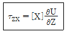
- MKLS-2
- ML-1S-1
- ML2S-2
- MLS-1K
(정답률: 알수없음)
48. 대기의 대순환과 관련된 사항 중 틀린 것은?
- 지구의 불균등한 복사 가열로 순환이 일어난다.
- 해륙분포의 지역적 차이로 인한 온도의 불균형으로 순환이 일어난다.
- 편서풍 파동은 대기의 운동에너지를 유효 위치에너지로 전환시키는데 기여한다.
- 편서풍 파동은 열과 각운동량을 고위도로 수송한다.
(정답률: 알수없음)
49. 일반적으로 온난핵(Warm Core)과 관련 있는 것은?
- 지형성 고기압
- 열적 저기압
- 온대성 저기압
- 한대 고기압
(정답률: 알수없음)
50. 회전하고 있는 원판의 A에 서서 반대쪽의 목표 B에 활을 쏘아 맞추려 한다. 어느 쪽을 겨냥해야 하는가?
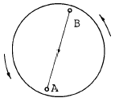
- A에서 B로 직선방향으로
- 목표물 B의 왼쪽방향
- 목표물 B의 오른쪽방향
- 회전하는 원판의 중심을 향해서
(정답률: 알수없음)
51. 전향력과 원심력이 균형을 이루는 흐름은?
- 지균류
- 관성류
- 선형류
- 경도류
(정답률: 알수없음)
52. 수평운동 방정식을 규모분석하였다. 크기가 가장 큰 항은?
- 곡률항
- 수평 가속도항
- 연직 가속도항
- 수평속도에 대한 전향력항
(정답률: 알수없음)
53. 평균 위치 에너지에서 평균 운동 에너지로 전환을 보이는 순환은?
- Hadley 순환
- Ferrel 순환
- Walker 순환
- 간접 순환
(정답률: 알수없음)
54. 중위도지방의 편서풍이 고도에 따라 증가하는 이유는?
- 온도풍의 영향
- 대기밀도의 고도에 따른 감소
- 마찰력의 고도에 따른 감소
- 온도의 고도에 따른 감소
(정답률: 알수없음)
55. 수평기압경도력의 방향은 일기도상에서 어떤 모양이 되는가?
- 등압선에 평행하다.
- 등압선과 30° ∼ 45° 를 이룬다.
- 등압선과 90° 를 이룬다.
- 일기도면에 수직하다.
(정답률: 알수없음)
56. 일정한 기압경도에 대하여 지균풍은 위도의 증가에 따라 감소한다. 그 이유는?
- 코리올리 인자(Coriolis parameter)가 커진다.
- 마찰력이 커진다.
- 코리올리 인자가 작아진다.
- 지구축으로부터의 거리가 짧아진다.
(정답률: 알수없음)
57. 적도 근처의 남반구에 있는 한 공기덩이가 관성류에 의해서 남쪽으로 움직이기 시작했다. 다른 힘이 작동하지 않는다면 얼마후에 이 공기덩이는 어떻게 되겠는가?
- 남쪽으로 계속 전진한다.
- 남쪽으로 전진하다 정지한다.
- 왼쪽으로 회전하여 북반구쪽으로 향한다.
- 남쪽으로 전진하다 오른쪽으로 향한다.
(정답률: 알수없음)
58. 중위도 종관 규모에서 연직 방향 기압 경도력의 규모(scale)는 얼마인가?
- 10-1ms-2
- 1ms-2
- 10ms-2
- 102ms-2
(정답률: 알수없음)
59. 다음 대기의 대순환에 관한 설명 중 틀린 것은?
- 적도에서 극쪽으로 이동하는 공기는 동쪽으로 전향이 일어난다.
- 파동의 형태로 적도와 극지방 사이에 에너지의 이동이 이루어진다.
- 지구 전체로 보아 편서풍이 편동풍보다도 더 현저하다.
- 아열대에서는 적도에서 상승되어 이동해 온 공기의 침강현상이 있다.
(정답률: 알수없음)
60. 다음 그림은 북반구 한점 P에서 두 층에서의 온도풍을 표시한 것이다. 하층의 온도풍을
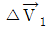
그 윗층의 온도풍을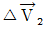
라 한다면 공기 기둥이 가장 안정한 영역은?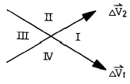
- Ⅰ
- Ⅱ
- Ⅲ
- Ⅳ
(정답률: 알수없음)
4과목: 기후학
61. 다음 중 한냉다습하고 지표보다 차며 불안정한 기단은?
- mTws
- mPku
- mTwu
- mPks
(정답률: 알수없음)
62. 다음 중 온실 기체에 해당하지 않은 기체는?
- 오존
- 수증기
- 메탄
- 질소
(정답률: 알수없음)
63. 지구 전체의 관점에서 볼 때, 하지 때 태양에서 받는 입사에너지는 지구가 방출하는 에너지보다 어떤가?
- 조금 적다.
- 거의 같다.
- 조금 많다.
- 상당히 많다.
(정답률: 알수없음)
64. 다음은 KӧPPen 기후분류에 나타나는 분류명이다. 적합지 못한 것은?
- BS : 초원기후
- BW : 사반나기후
- ET : 툰드라기후
- EF : 영구빙결기후
(정답률: 알수없음)
65. 다음 해류 중 한류에 속하는 것은?
- 브라질 해류
- 걸프 해류(Gulf Stream)
- 쿠로시오 해류
- 캘리포니아 해류
(정답률: 알수없음)
66. 다음의 대기 순환중 수명이 가장 짧은 것은?
- 계절풍
- 온대성 저기압
- 해륙풍
- 이동성 고기압
(정답률: 알수없음)
67. 클라이모 그래프(Climograph)란?
- 기후를 나타내기 위해 표시하는 그래프의 총칭
- 체감기후를 표시하기 위한 그래프
- 하이더 그래프(hythergraph)와 동의어
- 최적기후 여부를 나타내는 그래프
(정답률: 알수없음)
68. 기후학에서 다루는 열 수송의 주요한 과정들을 모은 것은?
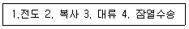
- 1. 2. 3
- 2. 3. 4
- 3. 4. 1
- 1. 2. 3. 4
(정답률: 알수없음)
69. 다음 중에서 태양상수(Solar constant)의 근사값은?
- 1.5 ly.min-1
- 2.0 ly.min-1
- 2.5 ly.min-1
- 3.0 ly.min-1
(정답률: 알수없음)
70. 푄(Fӧhn)현상에 대한 설명 중 옳은 것은?
- 기온이 상대적으로 낮다.
- 산악의 풍하측 지역에서 나타난다.
- 습도가 상대적으로 높다.
- 날씨가 흐리거나 강수현상이 있다.
(정답률: 알수없음)
71. 다음 중 대륙성 기후와 비교하여 해양성 기후의 일반적인 특징으로서 틀린 것은?
- 연중 습도가 높은 편이다.
- 기온의 년교차가 크다.
- 바람은 일반적으로 강하다.
- 구름이 많고 강수량도 많다.
(정답률: 알수없음)
72. 지구 육지상의 연평균 강수량은 약 얼마인가?
- 약 170 ㎜
- 약 670 ㎜
- 약 1170 ㎜
- 약 1670 ㎜
(정답률: 알수없음)
73. 하층이 상층 대기 흐름의 장파 곡(Trough)에 위치할 때 예상할 수 있는 기상변화는?
- 따뜻한 공기가 유입되어 온난한 날씨
- 습윤한 공기가 유입되어 습한 날씨
- 저지가 발생하여 이상가뭄
- 찬 공기가 유입되어 추운 날씨
(정답률: 알수없음)
74. 기후형과 기후형을 결정하는 기후인자가 옳게 연결된 것은?
- 열대기후 - 지표면 상태
- 동안기후 - 지리적 위치
- 고산기후 - 위도
- 해양성기후 - 해발고도
(정답률: 알수없음)
75. H.G.Houghton에 의한다면, 지구가 받는 총 일사량이 100일 때 직달 일사에 의해 지표에 도달하는 양은?
- 47
- 19
- 34
- 9
(정답률: 알수없음)
76. 산풍과 곡풍에 대한 다음 기술 중 틀린 것은?
- 낮에는 계곡에서 산정으로 분다.
- 일반적으로 곡풍이 산풍보다 강하다.
- 산풍은 소나기를 동반하는 경우가 많다.
- 산풍은 맑은날 밤에 더 뚜렷하다.
(정답률: 알수없음)
77. 도시에서 스모그(smog)현상이 일어나기 쉬운 기상 조건은?
- 역전층이 존재할 때
- 대기가 불안정할 때
- 날씨가 흐릴 때
- 대기확산이 활발할 때
(정답률: 알수없음)
78. 마파람이란 무슨 바람을 말하는가?
- 동풍
- 서풍
- 남풍
- 북풍
(정답률: 알수없음)
79. Kӧppen의 기후구분 중에서 온대하기 과우기후를 나타낸 기호는?
- Af
- Dw
- Cs
- Cw
(정답률: 알수없음)
80. 도시기후의 특성을 기술한 것 중 옳지 않은 것은?
- 기온상승
- 강수량 증가
- 시정 증가
- 풍속의 증가
(정답률: 알수없음)
5과목: 일기분석 및 예보론
81. 지상 일기도에서 다음 그림으로 기입된 일기 부호에 대한 현상인 것은?
- 하층운의 일종
- 중층운의 일종
- 상층운의 일종
- 안개의 일종
(정답률: 알수없음)
82. 등압선의 묘화에 대한 다음 기술 중 맞는 것은?
- 등압선은 서로 교차하지 않는다.
- 등압선은 도중에서 서로 합쳐지는 경우가 있다.
- 같은 시도의 등압선은 서로 평행하게 그려야 한다.
- 등압선은 도중에서 없어지기도 한다.
(정답률: 알수없음)
83. 대기의 연직구조를 구분하는 것에 사용되는 기상변수는?
- 습도
- 고도
- 온도
- 기압
(정답률: 알수없음)
84. 유선분석은 주로 어느 지역에서 하게 되는가?
- 극지방
- 한대지방
- 온대지방
- 열대지방
(정답률: 알수없음)
85. 한냉전선 통과시 나타나는 대표적인 운형은 다음 중 어느 것인가?
- 권운
- 상층운
- 층운
- 적란운
(정답률: 알수없음)
86. 오호츠크해 고기압의 발생 원인이 아닌 것은?
- 북극에서 고기압이 남하하여 오호츠크해 방면으로 장출하여 통과할 때 발생
- 이동성 고기압이 오호츠크해에서 정체하면서 발생
- 베링해의 발달한 기압능이 오호츠크해로 서진하여 발생
- 북태평양 부근의 난기단이 북상하여 발생
(정답률: 알수없음)
87. 지상 일기도 분석시에 해안부근의 관측소의 풍향이 일반풍을 대표하지 않는 경우가 많은데, 그 이유는?
- 해류 때문에
- 파고가 높기 때문에
- 해륙풍 때문에
- 해수온도의 변화가 심하기 때문에
(정답률: 알수없음)
88. 지균풍(geostrophic wind)의 요소가 아닌 것은?
- 공기의 밀도
- 위도
- 기압경도
- 원심력
(정답률: 알수없음)
89. 흐리고 바람이 서풍으로 125 knot 가 불고 있다. 국제기상 전문에서 Nddff를 구성한 것으로 가장 알맞는 것은?(오류 신고가 접수된 문제입니다. 반드시 정답과 해설을 확인하시기 바랍니다.)
- 827125
- 8270125
- 82700 00125
- 82799 00125
(정답률: 알수없음)
90. 태풍의 진로에 관한 설명이다. 올바르지 않은 것은?
- 북태평양 고기압을 오른쪽에 두고, 그 주변을 따라 움직인다.
- 기압 하강이 큰 쪽을 향해 움직인다.
- 상층에 기압골이 있으면 이 기압골을 타고 전향한다.
- 온도 경도가 작은 쪽으로 움직인다.
(정답률: 알수없음)
91. 현재일기(ww)의 숫자부호 30 ∼ 39는 무엇을 나타내는가?
- 안개
- 먼지보라
- 눈보라
- 연무
(정답률: 알수없음)
92. 응결고도로부터 습윤단열선을 따라서 원래 출발하였던 기압면까지 단열도 상에서 하강시켰을 때의 온도는?
- 상당 온도
- 습구 온위
- 습구 온도
- 위상당 온위
(정답률: 알수없음)
93. 다음 불연속선 중에서 가장 흔히 뇌우와 돌풍을 동반한 것은?
- 열대전선
- 온대전선
- 정체전선
- 한냉전선
(정답률: 알수없음)
94. 그림과 같이 흐름의 모양(실선)과 풍속(점선)의 분포를 나타낼 때 고기압성 와도가 가장 강하게 나타나는 것은?
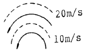
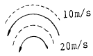
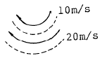
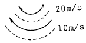
(정답률: 알수없음)
95. 다음 중에서 열역학선도(thermodynamic diagram)에 표시 되지 않은 것은?
- 등압선
- 등온선
- 건조단열선
- 등풍속선
(정답률: 알수없음)
96. 지표면에 접하고 있는 공기가 냉각으로 인하여 포화점에 도달하여 생성되는 안개가 아닌 것은?
- 이류안개
- 활승안개
- 복사안개
- 김안개
(정답률: 알수없음)
97. 동일 위도를 따라 부는 서풍계에서 기류가 발산한다면 다음 기술 중 일반적으로 맞는 것은?
- 지구의 와도(f)가 증가한다.
- 지구의 와도(f)가 감소한다.
- 상대와도(ζ)가 증가한다.
- 상대와도(ζ)가 감소한다.
(정답률: 알수없음)
98. 동해안 지방의 폭풍해일은 다음 중 어느 바람이 불 때 발생하는가?
- 북동풍
- 남동풍
- 남서풍
- 북서풍
(정답률: 알수없음)
99. 다음 중 전선의 형성조건으로서 적당하지 않은 것은?
- 성질이 다른 두기단이 부딪쳐 밀도와 온도의 불연속이 형성될 때
- 양측 또는 한쪽 기단이 변질하거나 멀어질 때
- 등온선과 유출축(axis of dilation)이루는 각이 45° 보다 적을 때
- 큰 규모의 반대방향 기류가 만날 때
(정답률: 알수없음)
100. 다음 기압계가 우리나라에 영향을 미칠 때 일기의 지속성이 가장 짧은 것은?
- 시베리아 고기압
- 양자강 고기압
- 오호츠크해 고기압
- 북태평양 고기압
(정답률: 알수없음)